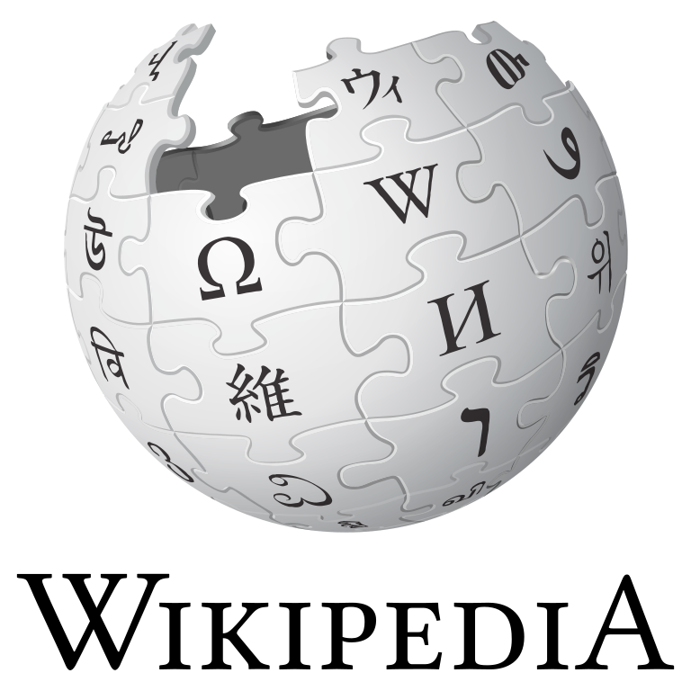
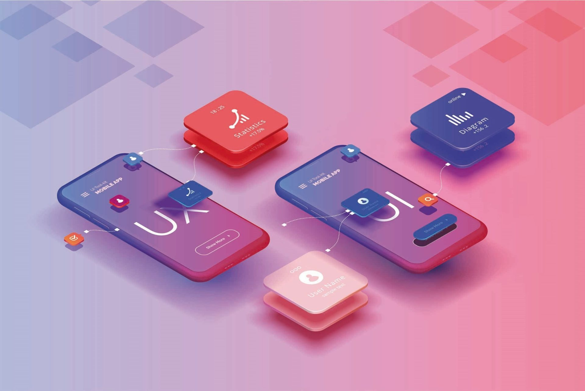

| HITOS |
HECHOS |
IMAGENES |
REFERENCIAS |
| WEB 1.0 |
- 1990
- ARPANET se desmantela y aparecen MILNET e INTERNET.
- 1991
- Tim Berners-Lee propone el concepto de la World Wide Web.
- Tim Berners-Lee crea la primera versión de HTML.
- 1995
- HTML 2.0 se publica como especificación por el IETF.
- 1996
- CSS se introduce como una recomendación del W3C.
- 1997
- HTML 4.0 fue lanzado en diciembre de 1997.
- 1998
- CSS2 se publica como recomendación del W3C.
- Google se funda y se convierte en un motor de busqueda clave en linea.
|
    |
Merodio, J. (2024, enero 18). Evolución de la web 1.0, 2.0, 3.0 y 4.0. Blog de Wix | Diseño Web, Fotografía y Tips de Negocios. https://es.wix.com/blog/2024/01/evolucion-de-la-web
|
| WEB 2.0 |
- 2001
- Wikipedia fue lanzada como una enciclopedia en linea de acceso gratuito.
- 2003
- WordPress se lanza como una plataforma de blogs.
- 2004
- La red social Facebook se lanza para el público en general.
- 2005
- YouTube fue lanzado permitiendo a los usuarios cargar, ver y compartir videos.
- 2007
- Apple lanza el iPhone marcando la era de los telefonos inteligentes.
- 2011
- CSS3 se convierte en un estándar en desarrollo.
|
   |
Euroinnova Business School. (2022, enero 31). Diferencias entre web 1.0, 2.0 y 3.0. Euroinnova Business School. https://www.euroinnova.edu.es |
| WEB 3.0 |
- 2009
- Bitcoin, que impulsa la tecnología blockchain, es lanzado.
- 2012
- CSS4 comienza a ser discutido, pero CSS3 sigue siendo la versión predominante.
- 2014
- HTML5 se convierte en una recomendación del W3C.
- 2016
- Lanzamiento de la red social descentralizada Steemit.
- 2017
- Desarrollo de Filecoin, un proyecto de almacenamiento en la nube descentralizado.
|
  |
Metamandrill. (2022, enero 17). Internet 1.0 2.0 3.0; ¿Cuál es la diferencia y ejemplos?. https://metamandrill.com/es/web-1-0-2-0-3-0/ |
| WEB 4.0 |
- 2015
- WhatsApp Web permitió a los usuarios acceder a sus mensajes y conversaciones a través de una interfaz web, lo que facilitó la comunicación desde computadoras de escritorio.
- 2020 - 2030
- Integración más profunda de inteligencia artificial y machine learning en el desarrollo web.
- 2022
- Auge de interfaces de usuario más intuitivas, posiblemente impulsadas por realidad aumentada (AR) y realidad virtual (VR).
- 2025
- Desarrollo de sistemas web altamente personalizados basados en preferencias y comportamientos del usuario.
- 2030
- Mayor adopción de tecnologías holográficas para experiencias de usuario más inmersivas. (hipotético)
|
 |
Hotmart. (2023, agosto 18). Web 4.0: ¿Cuáles son sus principales características? xWeb 4.0: qué es y cómo trasformará tu vida; Hotmart. https://hotmart.com/es/blog/web-4-0 |